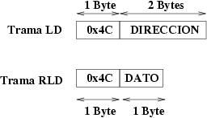
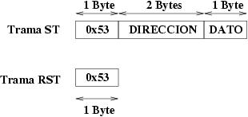
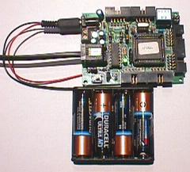

Microcontrolador: PIC16F876A (a 20MHZ)
Tarjeta: SKYPIC
Fichero Ejecutable: [Para Bootloader] [Normal]
Autor: Juan González
Licencia: GPL
Notas: Inicialmente el led está encendido.
Hay dos implementaciones, una en ensamblador y otra en C:
|
PROYECTO STARGATE: SERVIDOR GENERICO |
|
Servidor de propósito general para poder acceder desde el PC a todos los recursos del microcontrolador empleado. Muy útil para hacer sistemas de monitorización y control. También facilita la creación del prototipos de programas que interactúen con sistemas externos.
Este servidor implementa los servicios básicos y además dos específicos:
LOAD: Lectura de un dato de 8 bits del mapa de memoria del microcontrolador
STORE: Escritura de un dato de 8 bits en el mapa de memoria del microcontrolador
El mapa es de 64KB (Direcciones de 16 bits). Es responsabilidad del programa cliente el identificador el microcontrolador empleado (servicio de identificación) y conocer así la estructura del mapa de memoria.
Por ejemplo, si se está usando un 68hc11, el cliente sabrá que en la dirección 0x1000 se encuentra el mapeado el puerto A. En el caso de un PIC16F876A, el puerto B se encuentra en la dirección 0x0006.
El funcionamiento del servidor es el siguiente:
Implementación de los servicios LOAD y STORE
Implementación de los servicios básicos : PING, ID.
Si recibe un byte que no reconoce, lo ignora
Servicio LOAD
El cliente envía la trama LD en la que especifica el código de la trama y la dirección de la que se quiere leer. Primero se envía el byte menos significativo y luego el más significativo. El servidor responde con la trama RLD, que tiene un código de identificación y el dato solicitado:

Ejemplo:
Desde el cliente (PC) queremos leer el valor de la dirección 0x1000
(supongamos que es 0xB8)
Trama enviada: 0x4C 0x00 0x10
Trama recibida: 0x4c 0xb8
Servicio STORE
El cliente envía la trama ST en la que se especifica el código de la trama, la dirección y el dato que se quiere escribir. Para el envío de la dirección, primero se manda el byte menos significativo y luego el de mayor peso. El servidor responde con la trama RST.

Ejemplo:
Desde el cliente (PC) queremos escribir el valor 0xB8 en la
dirección 0x1000
Trama enviada: 0x53 0x00 0x10 0xB8
Trama recibida: 0x53
|
TARJETA SKYPIC (20 MHZ) |
|
|
|
Configuración de la tarjeta Skypic:
Jumpers JP1, JP2, JP6 y JP7 puestos
Jumper JP4 en posición 1-2
Jumper JP5 en posición 3-2
Jumper JP3 en posición 1-2
|
Implementación 1 |
Implementación 2 |
|
|
|
TARJETA CT6811 |
|
 |
|
Configuracion de la tarjeta CT6811:
Jumper JP5 quitado
Jumper JP3 puesto (Led activado)
Jumper JP7 en posición OFF
Jumper JP8 puesto
Jumper JP4 en posición RST
Switch 2 a ON, resto a OFF (Modo single chip)
|
TARJETA GPBOT |
|
|
|
|
Implementación 1 |
Implementación 2 |
Implementación 3 |
|
|
|
|
Microcontrolador PIC16F876 a 4MHZ |
|
|
|
|
TARJETA SKYPIC |
|
Implementación para el Microcontrolador PIC16F876A, en una tarjeta SKYPIC. Lenguaje ensamblador |
|
|
Implementación para el Microcontrolador PIC16F876A, en una tarjeta SKYPIC. Lenguaje C |
|
|
Ejecutable |
|
|
Ejecutable, para cargar con un bootloader |
|
68HC11 |
|
Implementación para el 6811, en una CT6811. Ensamblador as11 |
|
|
Ejecutable |
|
68HC908GP32 |
|
Implementación para la GPBOT y el ensamblador asxxx |
|
|
Implementación para la GPBOT y el entorno P&E Microsystem |
|
|
Implementación para la GPBOT y el compilador SDCC |
|
|
Ejecutable |
|
PIC16F876A y Compatibles |
|
Implementación para el 16F876A, para el ensamblador gpasm (Linux) |
|
|
Implementacion para el 16F876A, para el entorno MPLAB de Microchip (Windows) |
|
|
Ejecutable |
Proyecto Stargate, Página principal
Tarjeta Skypic: Tarjeta entrenadora para el microprocesador 16F786A de Microchip
Tarjeta CT6811 :Tarjeta entrenadora para el microcontrolador 68HC11
GPBOT, :Tarjeta entrenadora para el microcontrolador 68hc908gp32
Ensamblador gpasm para PICs
Ensamblador ASXXX, para 68hc08
Compilador de C: SDCC, para 68hc08 y PICs
21/Julio/2006: Publicado servidor sg-generic-pic16f876a-skypic-0, para la tarjeta Skypic a 20Mhz
4/Enero/2006: Actualizada dirección de correo electrónico de Jose Angel de Sande Tundidor
17/Feb/2004: Publicado servidor sg-generic-6808-gpbot-0
22/Oct/2003: Publicado servidor sg-generic-pic16f876-xx-0
21/Mar/2003: Publicado servidor sg-generic-6811e2-ct-0